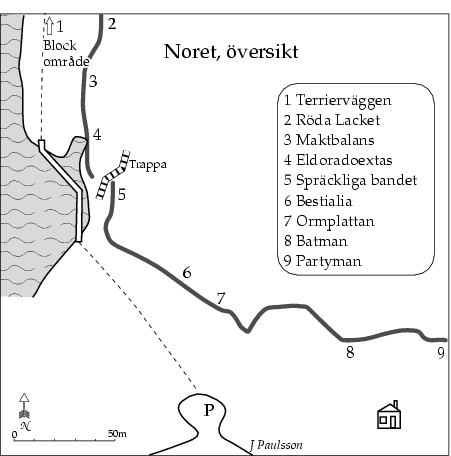

Lat: 59.20942 Long: 18.35471
Noret är ett samlingsnamn för klipporna runt båthamnen som ligger söder om
Klövberget
. Här finns några fina och unika leder blandade med en del skräp.
Här finns mycket klippa men mycket är också ointressant ur klättersynpunkt. Hittills har här klättrats på fem ställen: klipporna innanför nedfarten till bryggorna, svaplattan th om trappan uppför berget, den branta väggen inne th efter att man har gått över bryggorna, den korta väggen som ligger högt upp ovanför (och bakom) den stora blocksamlingen samt väggen längst bort tv.
Sydväst, mestadels öppet för solen.
<div style="width: 305; float: right; margin-left: 10px; padding: 3px; border: solid 1px #cccccc;"> <googlemap width=300 height=200 lat="59.20942" lon="18.35471" zoom="12" type="map" controls="small"> 59.20942,18.35471,
Noret
</googlemap> </div> Åk som för
Klövberget
men kör förbi parkeringen och ta th på Svartbäcksvägen och följ den tills en brant backe leder ner till vattnet. Sväng här brant åt h på Noretvägen och fortsätt tills en liten väg/stig försvinner in åt h. Parkera här! Stigen leder ner till båthamnen.
<slresang> titel=Noret lat=18354710 long=59209420 </slresang>
Överhängande vägg med ett block framför. Skiss saknas av vänstra delen.
Tre leder går på blocket:
Dessa leder är till höger
50m norr om båthamnen finns en låg men brant, lite rödaktig klippa. Den Enklaste sättet att komma upp till klippan är att gå tv om blocken men det går också att klättra upp på högra sidan.
I "smutshålet" går två leder:
Strax bortanför bryggorna finns ett jättelikt block med en fin låghöjdstravers och diverse vertikala boulderproblem. Bakom detta block finns en brant och kompakt vägg med flera överhäng och ett avslutande tak som ger associationer till Klövberget
Nästa svaplatta som leder upp till en hylla med en logisk men till synes ganska tunn avslutning ovanför är antagligen inte klättrad. Nere vid båthamnen finns en trappa upp på berget. Th om denna finns en led uppför den mycket originellt tecknade svaplattan.
Från bryggorna går en vägg upp till parkeringen.
20m innanför parkeringen finns ett högt klipparti med några branta svaplattor.
Nästa parti ligger ovanför en gul sommarstuga. Försök att undvika att störa dem som bor där i onödan.
Liten vägg i branten ovanför Svartbäcksvägen ett par hundra meter innan Noretvägen.
Några väggar finns på
Kategori:Saknar vägbeskrivning
Kategori:Saknar skiss
Kategori:Trad
Kategori:Sport
Kategori:Stockholm
Kategori:Tyresö
Copyright (C) Permission is granted to copy, distribute and/or modify this document under the terms of the GNU Free Documentation License, Version 1.3